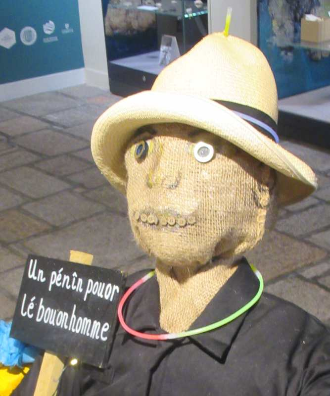

 Èrsouv'n-ous du chîn d'Novembre? La trahison et l'compliot d'la poudre dé canon? Les feux d'jouaie et les feux d'artifice! Mais nou dit qu'la fête d'la Séthée d'Guy Fawkes n'est pon aussi populaithe ach'teu qu'aut'fais. Pouortchi?
Eh bein, y'a des gens tchi craient qu'la célébrâtion a 'té trop anti-Catholique dans l'pâssé et qué j'sommes pus toléthants aniet. Un aut' avis est qu'la fête a 'té ruinnée par not' préotchupâtion auve la seûtheté, car les feux d'artifice qu'nou peut acater pouor faithe sèrvi siez sé sont ach'teu bein faibl'yes et i' n'valent rein compathés auves les cheins d'not' jannèche.
Ach'teu i' n'est pon pèrmîns ès mousses d'acater les feux d'artifice et don i' n'font pon d'bouanhommes pouor exhiber dans les rues à seule fîn dé tcheûter "un pénîn pouor lé bouanhomme".
Ch'est sans doute eune bouonne idée dé vouler protéger les gens contre les brûleuthes et bliêsseuthes înflyigies par les feux d'artifice, mais ch'est un pitchi qu'nou pèrd un mio les couôteunmes d'la Séthée d'Guy Fawkes.
La fête dé Halloween est dêv'nue hardi populaithe à sa pliaiche - ch'est p't-êt' l'înfluence des films Améthitchains. Mais Halloween est d'originne Celtique: les Irlandais et l's Êcossais înmigrés aux Êtats-Unnis avaient apporté lus couôteunmes, et né v'chîn Halloween r'înmporté ès Îles Britanniques par la tchultuthe Améthitchaine.
Ch'fut en 1605 qué Guy Fawkes et sa dgaîngue dé complioteurs 'taient supposés d'aver êprouvé à faithe sauter l'Rouai et l'Parlement à Londres. L'înmaginnâtion populaithe vait l'malîn Guy Fawkes attrappé au moment même d'alleunmer la poudre dé canon. Mais ach'teu y'a un tas d'gens coumme mé tchi n'craient pon au souo-disant compliot d'la poudre dé canon. J'sommes d'avis qu'i' n'y' avait pon d'compliot Catholique: ch'fut en réalité un compliot anti-Catholique, car les nobl'yes Protestants avaient peux qu'lé Rouai fûsse trop toléthant envèrs les Catholiques et i' voulaient présèrver lus pouver en înspithant eune campangne dé pèrsétchution contre les Catholiques. Lé compliot fut înventé - en réalité l'évidence est peu probabl'ye à nos ièrs - et des pouôrres innouothants 'taient tortuthés à fîn qu'i' confêssîssent.
Ch'est drôle, mais mé tchi n'crait pon au compliot, j'aime bein la fête d'la Séthée d'Guy Fawkes. Tch'est qu'est vot' avis?
Viyiz étout: